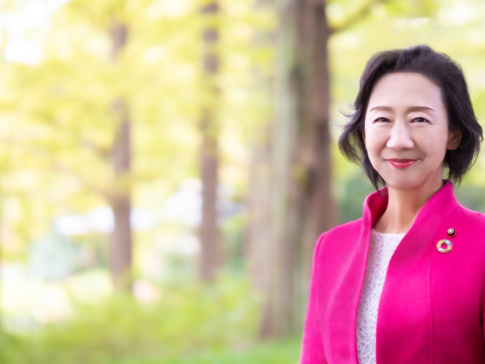

01
健康・生活
住むだけで、
元気になれるまち。
心も体も健やかに。必要な医療や支援に、誰もがつながれる暮らしへ。
取り組むテーマ ＋
- 女性の健康課題への理解と支援
- 健康格差の縮小と身近な医療の確保
- 柔軟な働き方
- 移動しやすいまちづくり

子どもも、大人も。支える人も、支えられる人も。
「このまちに暮らしてよかった」を、ともに。02 — POLICY
大切にするのは、日々の暮らしの実感。
3つの視点から、誰もが安心できるまちを考えます。
健康・生活
心も体も健やかに。必要な医療や支援に、誰もがつながれる暮らしへ。
子ども・学び
一人ひとりの気持ちに寄り添い、自分らしく学び、育つことのできる環境へ。
共生・地域
困ったときに相談できる。違いを認め合い、地域で支え合えるつながりへ。
03 — PROGRESS
議会での提案・質問
112項目2015年6月〜2026年6月
本会議質問19回の大項目数
本会議での質問
19回2015年6月〜2026年6月
一般質問・代表質問
市議会議員
5期目2007年初当選、2015年再当選
2023年当選・現在5期目
地域支え合い研究会
106回2016年12月〜2026年9月
研究会の開催回数
議会で提案・要望してきたテーマ
必要な支援が、必要な人に届くために。
親子が地域とつながり、安心できる場へ。
分野を越えた支援と、地域のつながりへ。
市民の声をもとに議会で提案・要望してきた取り組みです。施策は市や地域、関係者の協働によって進められています。
04 — COMMUNITY
地域支え合い研究会「ちえの輪」
医療、介護、子育て、教育、防災。
身近なテーマを入り口に、地域の皆さんと学び合う場です。
2016年12月の発足から、地域のキーパーソンとともに、支え合いのあるまちづくりを考えてきました。
どなたでも参加できる研究会です。
05 — PROFILE
宇都宮生まれ、3人の娘の母。
学童保育やPTAの活動を通じて、地域の声に向き合ってきました。
子育て、教育、福祉。暮らしの現場での経験を大切に、
市民が主役のまちづくりを目指しています。
福田 智恵 ふくだ ちえ
詳しいプロフィール・経歴 ↗宇都宮市議会議員 初当選
議員辞職
老人デイサービスセンターにしはら 施設長
宇都宮市議会議員 再当選
地域支え合い研究会 発足
宇都宮市議会議員 当選、5期目へ
06 — JOURNAL
議会での取り組みや、地域での出会い。
活動の記録をお届けします。
07 — CONTACT
暮らしのなかで感じたこと、困っていること。
その一つひとつが、まちを変えるきっかけです。
事務所の連絡先・お問い合わせページへ進みます。